This is a blog post that I was going to write few days ago but was very very busy with other things in life. So I have recently arrived in the USA, to speak at the PADNUG meet up. I have also spoken at Portland F# User Group and .NET Unboxed already. Next conference is QCon in San Francisco. Here I however would like to tell about some things that I've found fascinating, have impressed me, or that I have found different from what I am used to...
PeopleI am initially from Belarus, Ukraine, and Poland and the first thing that I noticed was how people are different, while I was at the .NET Fringe Conference in April of 2015, the first time I was in the United States. For example if you stay at the hotel or go to any grocery store, or take a bus, or just do whatever thing you want to do - people are very friendly. Generally, I have a notion that the overall population of America is much happier than the part of the world where I have come from. People that I don't know were smiling to me a lot, said hi on the street just because it's nice to say hi randomly in the morning. In April I was staying at the DoubleTree Hotel and the conference venue was 20 minutes away from my place by foot. As it usually happens, I got lost a bit and didn't have Internet to look up the right direction.
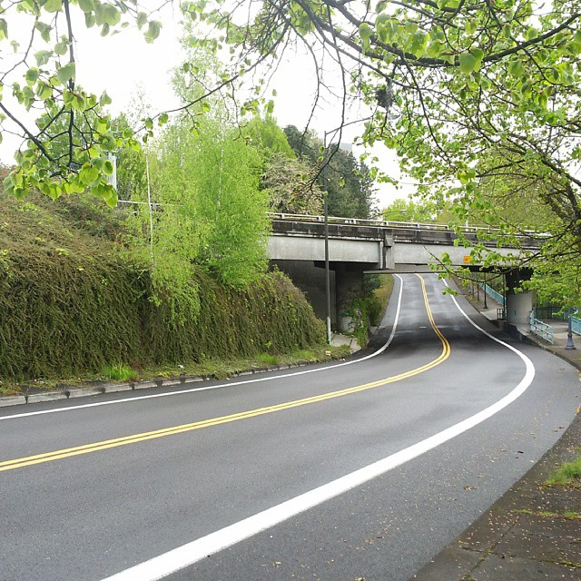It was also the early morning and just a few people were on the street. But despite that, the first person that I had the luck to catch was a runner. She was very friendly and showed me the way by walking halfway with me and making sure that I would not get lost later. That was amazing! The other thing that was very noticeable for me. In any place I would go, be it some coffee shop or a cafe, a restaurant, a grocery store or anything else - people are happy and communicating, they will greet you and at least say hi. Usually they will ask you how you are doing, make a note about how cool you look today or something else. In other words, people are very open and start these little conversations about everything and anything, they might mean nothing but they just are friendly and lift the mood up. On another note I should add that it's not just friendliness. There are quite big cultural differences between Americans and my part of the world. Here in the States every person is unique. They dress a unique way, speak a unique way, and behave differently from each other. If you want to count the number of people with brightly colored blue, pink, or green hair during the day, if you say 17 by the end, it is a normal number. People are freer from the inside here. I haven't seen any mother that would shout at her kid, unlike the situation you may notice in Belarus. Kids are taught to have their own opinion and freely express it, feeling free to ask questions, try things and learn from it. Kids are less shy here. I should mention that in Portland in particular there are a lot of homeless people on the streets. They are different from Russian or Ukrainian homeless people. Grocery stores usually take this into account and have special boxes with cans where homeless people could pick them up and exchange for money, just as an example. There are a lot of very strange and extremely weird people in Portland too. They can speak to themselves, do something ridiculous on the street, and say something hilarious. At first that might seem creepy but after you get used to the city spirit you will find out that here it's normal, it's just the city spirit. There is a bunch of "Keep Portland Weird" posters all over the city.
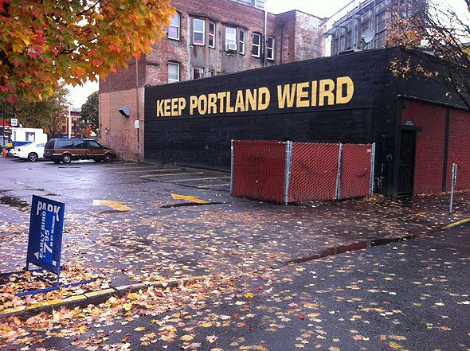I personally think that this all is the indicator of the level of freedom and creativity of people living here, which is a very good sign.
One day we decided to go get some doughnuts.
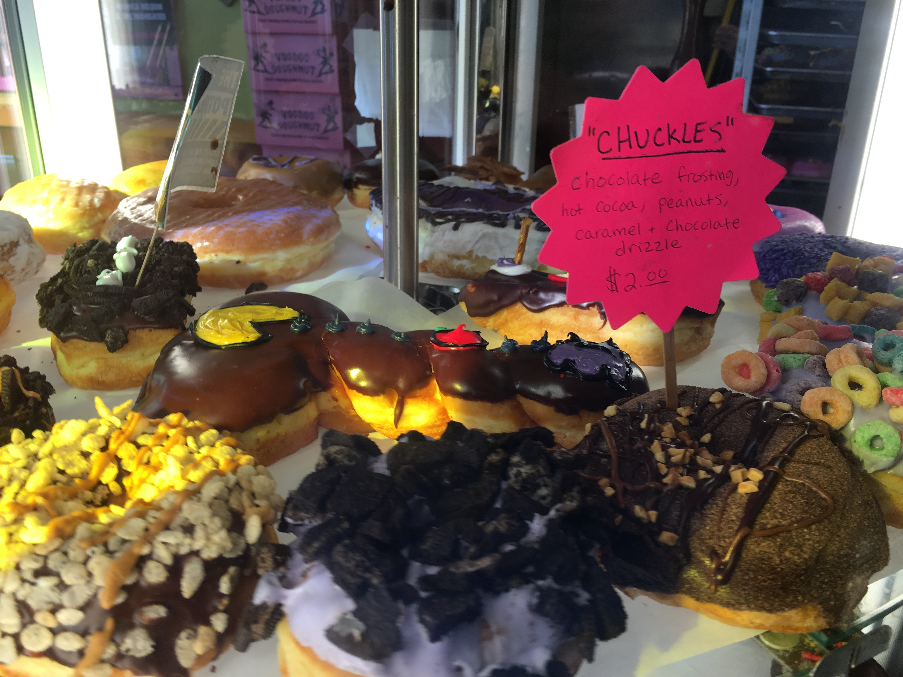It was just a usual day, my husband, our F# friend Phil from UK and I went to the Voodoo Doughnuts and as we entered the place we were pretty amazed by unexpected beginning of the marriage ceremony of the couple we don't know. So all the line of people who were waiting in the queue for the doughnuts became the eyewitnesses of the wedding ceremony right in the Voodoo Doughnuts place! Hillarious.
FoodThe first time when I arrived in the USA I had stayed 3 or 4 days and all the food that I was eating was mostly burgers. So American. The second time I have arrived here I started noticing other places. There are way more food places than in Ukraine, Belarus, and Poland. That is; coffee shops, cafes, restaurants, and etc. The food options in Portland do not disappear as one leaves the center of the city. There are a bunch of burger places, Chinese places, Thai food, some Italian, BBQ ones, Tex-mex, and overall a big variety.
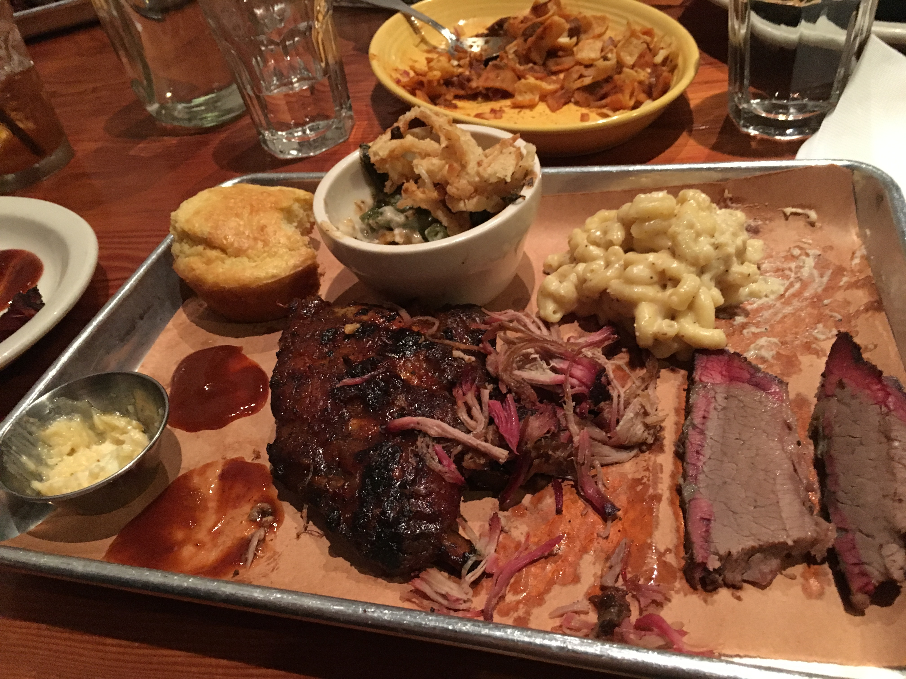That's why people often get fat if they don't stay active. My favorite drink in the States is called sweet tea. That is actually the tea I have been making for myself at home in Belarus, Ukraine, and Poland and my friends were thinking that I am crazy. But no, I am not! This is officially popular in the States, which I am very happy about. It's an Ice Tea that tastes really sweet. Usually you can have it with some organic fruit taste, like peach or strawberry sweet tea. Yum! Another difference is that in European countries they don't bring you water on the table when you come to a cafe or a restaurant. Here in the US they provide it everywhere and you don't have to pay for the water. They also refill it when it's close to being finished too. In Europe you are supposed to ask the waitress or the waiter for the bill or ticket, but here they bring it to you by default, no need to ask. As for breakfast food - bagels and biscuits are quite popular, as well as burgers with omelets and scrambled eggs. Biscuit isn't a cookie by the way. It's a very tasty bakery dish with lots of meat and cheese inside.
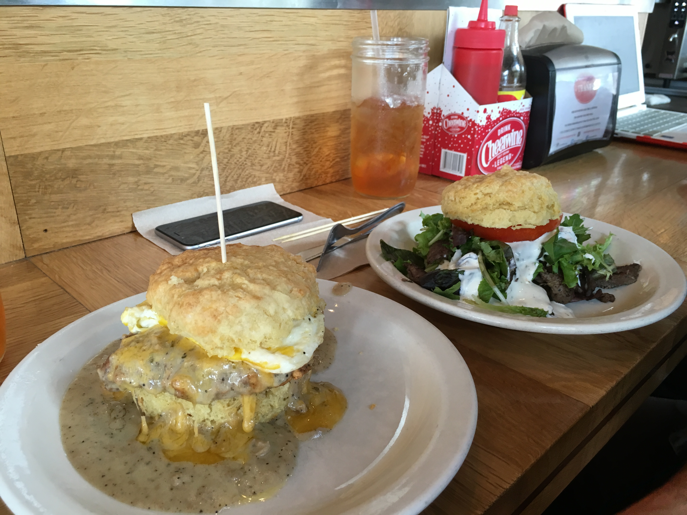Seattle and Bainbridge Island impressed me a lot with the amount of great awesome fresh seafood. King crabs, salmons, giant shrimps... oh my god!
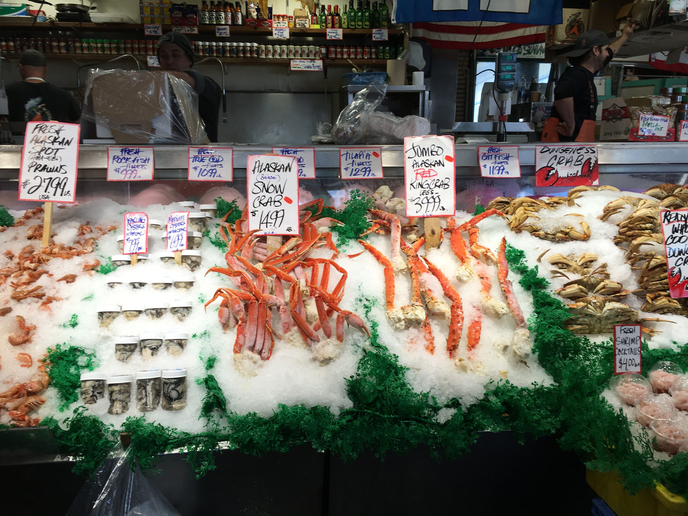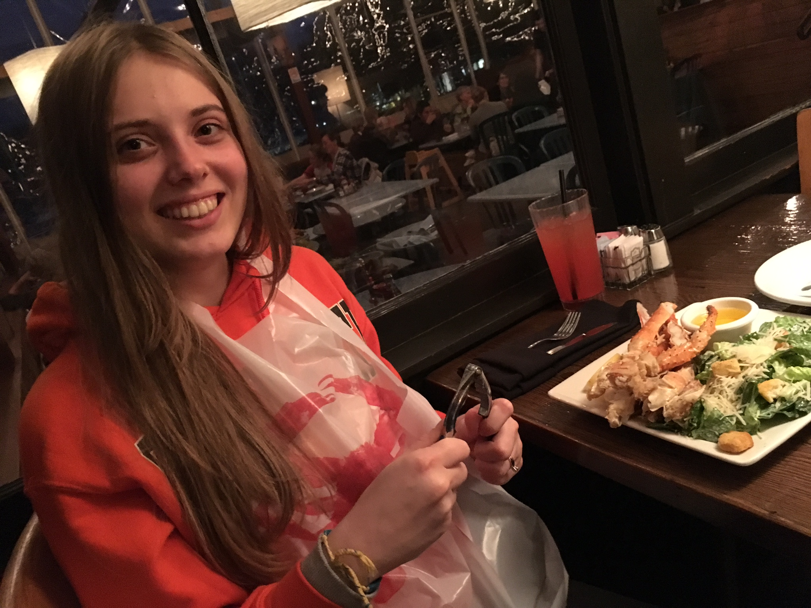
The benefits of living near the ocean - healthy and fresh food.
Grocery Stores and Shopping MallsHealthy and fresh food isn't just in Seattle. All over America there is a plenty of grocery stores. If you have been to a grocery store in Belarus, Ukraine, or Poland you know that sometimes you may see not fresh or even spoiled food on the shelves. The meat can be a week old and other unacceptable situations. Here everything is different with the grocery stores. You have a big variety of things to choose from. Everything is fresh always. If it is meat it is either from today or yesterday. You may ask the lady in the grocery store to make it the ground meat or to just cut it how you like so you won't have to spend hours at the kitchen grinding the meat. The same quality is available for fruits and vegetables. Oh, the berries are so so fresh and sweet!
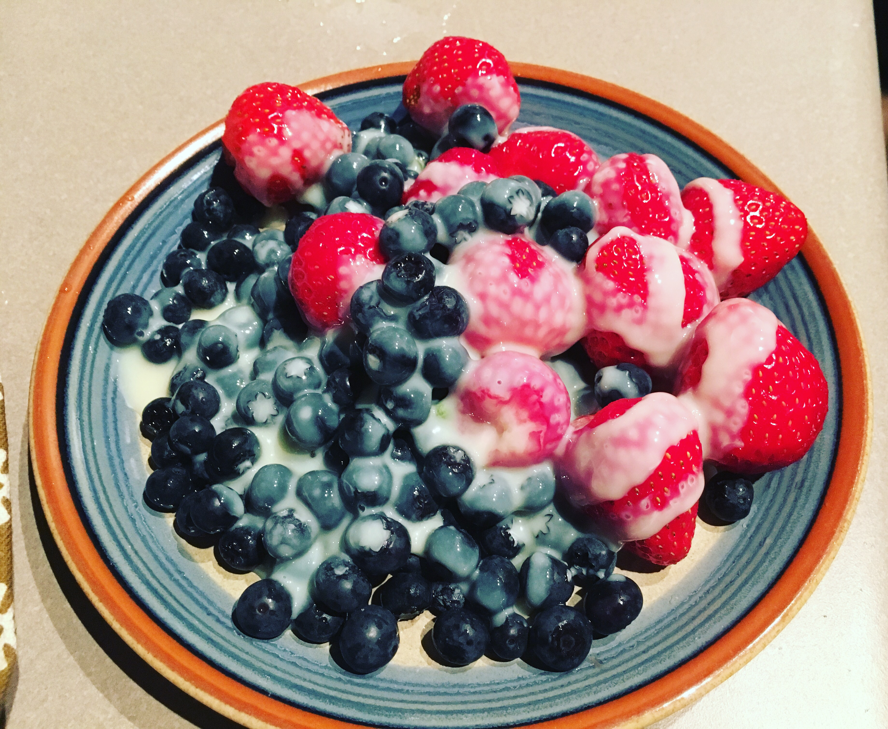In other words, stores are pretty good. In addition to this, the personnel is really very friendly, as all Americans usually are, they say hi to you and help you to pack things in the bags carefully. As for the shopping malls, they're pretty badass too. I haven't been to huge shopping malls yet. But I've already seen some clothes stores downtown to say that you can easily find quality and stylish things. There are expensive and cheap things for various audiences.
ProgrammingAmerica has a huge number of tech companies. Here you can find giant corporations, startups, small businesses and all variety of things that you could never imagine. Of course, Silicon Valley is here too near San Francisco. If you ask about the best way to do reactive updates when you're on the bus or in the grocery store - you have all chances to get the random answer from the random nearest computer hacking person. The programming field is really strong here. There are a bunch of technical computer conferences happening in the United States that vary from hardcore low level stuff to lightweight, neat user interface and design conferences, and not limited to just these I've mentioned. Events occur very often in every part of the country. You can find some local user groups and meet ups on each technology and language that even exists. The person in the software engineering space in the USA has a huge variety of options and opportunities to grow into that depends only on the desire and hardworking effort directed to achieving something big. Community on the west coast is pretty awesome and amazingly active.
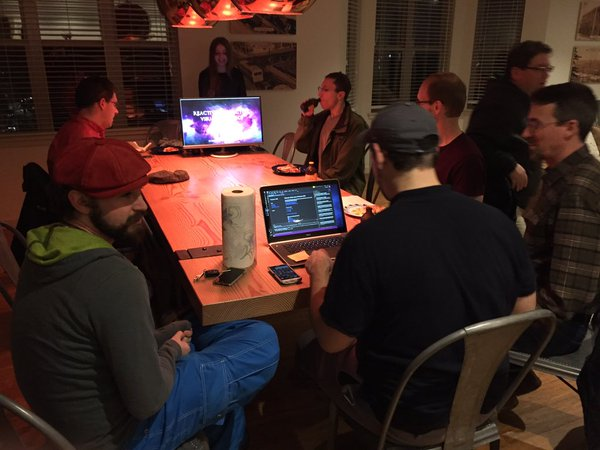I have already spoken at the PADNUG meet up in Portland Area, at .NET Unboxed conference and at F# User Group and can say that people that I've met here are very curious about technology and keen to learn new things to be on the edge of technology.
Cars, Bikes, Trains, Roads, and TransitThe most common way to move from point A to point B here is cars. Almost everyone has a car here. Cars are mostly with automatic transmission setup. There are cars that are regular and there are also cars that I haven't seen in Europe, like the Ford F-150. Other ways for the transit are buses, trams, funiculars, bikes and so on. West coast is a pretty cycling friendly place. Also, as for driving, in some parts of the USA people can get the driver's license starting from 15.5 years old. People drive pretty well here on average, assholes are usually punished by the American society.
NatureIn Belarus and Ukraine in places where I have been growing up the nature is very beautiful. There are nice green thick forests with different kinds of trees and amazing looking rivers and lakes, but everything is mostly very plain.
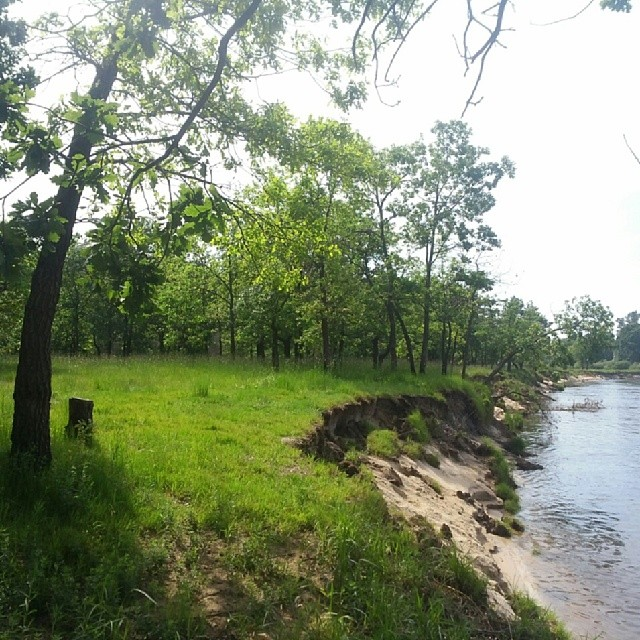In Kiev though, right in the city you can find the hills and parks on the hills that look fantastic from the river when you ride a ship or a boat across Dnipro River. The western part of Ukraine has mountains called Karpaty. I've been there when I was a relatively small child and remember the awesomeness of being there around the high mountains, sea, and evergreens. In the United States nature is really diverse. I have never ever seen such a big variety of different natural views. I am writing this sitting in the roomette of the Amtrak Coast Starlight train that takes my husband Adron and I from Seattle to Los Angeles, as a part of our honeymoon. What I like in nature is basically - green trees, and not only green - but yellow, red, pink, white and blue too, like Portland and Seattle have during the Fall time of year.
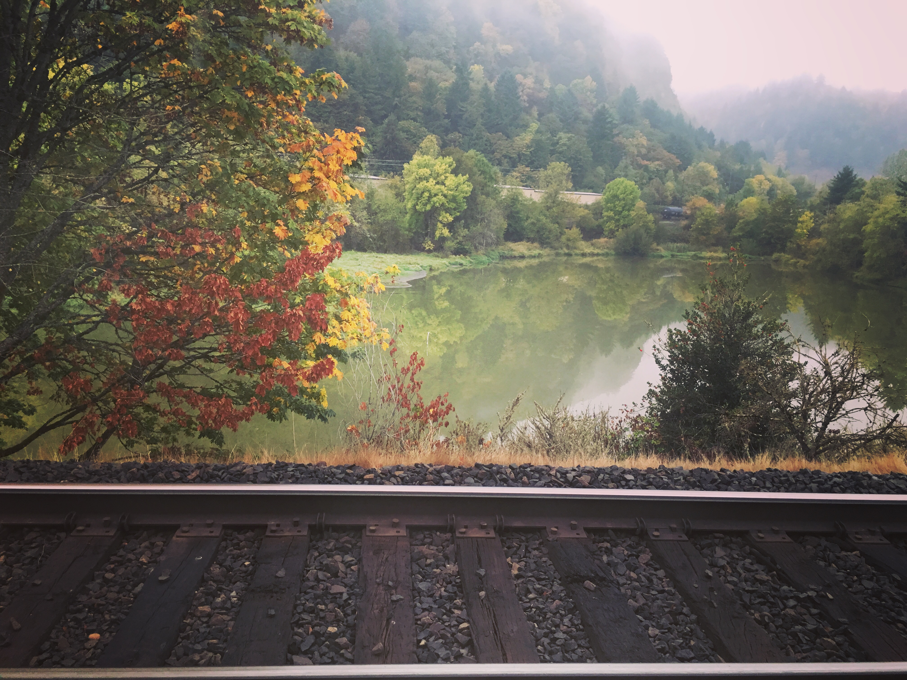
Unlike Belarus and Ukraine, Portland's autumn is a really pleasant season. It doesn't become freakishly freezing cold here in Portland. It's like 15 degrees Celsius most of the time here.
The other thing that impresses me a lot here in the Cascadian region is the beauty of the rivers and the Puget Sound. I was literally standing in front of these waters of America with a mouth wide open and couldn't move my eyes away from it. The opulence of the Puget Sound is indescribable, especially when you are surrounded by it riding in a ferry like we did during our 35-minute voyage from Seattle to the Bainbridge Island.
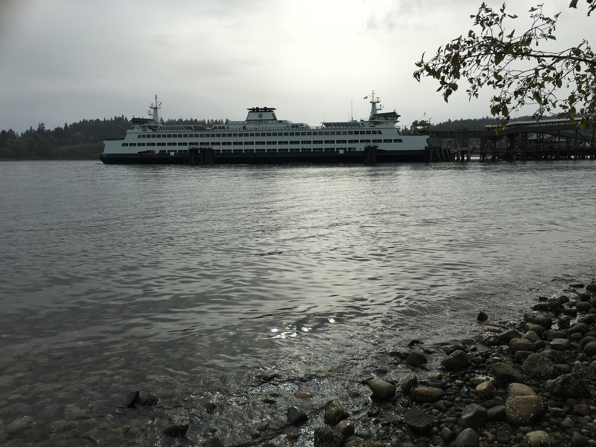Even though the ferry wasn't moving too fast for a ferry - it was rather cold to stand outside. But, being all excited as I usually am, I was taking lots of pictures admiring what I saw. The overall train ride from Seattle to Los Angeles is pretty epic adventure. It lasts > 35 hours and gives you the unique opportunity to have a privilege of seeing the diverse beauty of changing views of the gorgeous America. Now it's the end of October and in Seattle or Portland it's not super-hot summer weather already, it's fall, so on the train I've been watching the full spectrum of colors on the trees, peaceful Oregon towns, quiet neat lakes, mountains wrapped in the magic white fog that was following us during the first part of the trip. When we arrived to the California region everything has changed dramatically. In a good sense, it became very different. Silicon Valley and various Californian places were reminding we American movies about cowboys, the yellow sunburnt grass, palms, vegetables and fruits growing on the large fields, southern animals walking around.. All this is mixed with hi-tech million dollar companies and trash that is left from the car parts, woods, and other things. I find this all pretty fascinating. You can feel the smell of money down there. There was the part of the train ride that is totally and unbelievably breathtaking. The Pacific Ocean. The ride of our train took place right by the edge of the coast so we could enjoy watching the waves forming the white foam, the ocean changing colors from blue to deep blue to dark green to emerald and back to blue. The views that cannon be described by words. When we arrived there we spent a couple of awesome days in Los Angeles and on the New Port Beach. Pictures here, here, here, here and here.